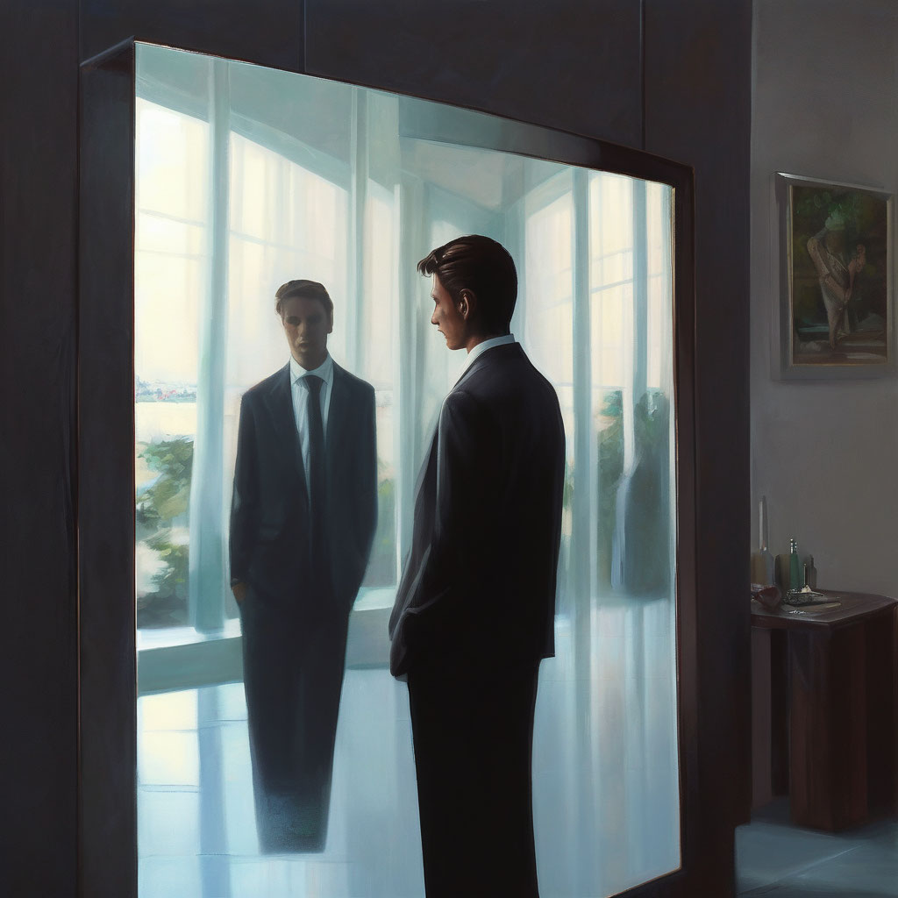

Нейроматрица самоопределения

Описание:
Техника «Нейроматрица самоопределения» помогает осознать важные для вас смыслы, услышать себя и воплощать образ себя настоящего в жизнь.
Категория техники:
Мотивы
Время:
10 минут
Зачем:
Психотехника «Нейроматрица самоопределения» дает возможность настроиться на осознание наиболее важных для вас смыслов, действительно услышать себя и перейти к воплощению образа себя настоящего в жизнь.
Как это работает:
Психотехника дает возможность выйти за границы привычной системы восприятия и посмотреть на жизнь и волнующую ситуацию со стороны. Например, вам необходимо будет вынести на лист бумаги то, чем вам нравится заниматься в жизни и что получается. Так вы будете совмещать логику с бессознательными процессами, что позволит выйти на целостный подход к решению задачи самоопределения и расширит картину понимания себя. При использовании техники могут проявиться такие таланты и возможности, которые вы прежде не принимали во внимание. Основные вопросы, которые вы будете задавать себе на протяжении работы: Что это для меня значит? Почему это так отзывается? Как я это сейчас чувствую? Необходимо отслеживать свое состояние по трем уровням восприятия: «Что я сейчас думаю? Что чувствую? Что ощущаю в теле?»
Алгоритм выполнения:
-
Подготовительная часть
-
Нарисуйте две оси, пересекающиеся в середине, чтобы получилось четыре квадранта. Вертикальная ось называется «Получается», горизонтальная — «Нравится».
-
Каждую ось расчертите на 10 делений: от 0 — «Совсем не нравится» до 10 — «Максимально нравится».
-
Засеките две минуты и постарайтесь написать не задумываясь как можно больше слов на тему «у меня получается», затем — на тему «мне нравится». На каждую тему дайте себе две минуты. Старайтесь в процессе написания не отфильтровывать слова. Даже если вам кажется, что какое-то слово не имеет отношения к теме, запишите его, это важно. Обратите особое внимание на слова после двадцатого по счету. Спросите себя: «А о чем для меня это слово? Как это связано с “нравится” или “получается”?» Так можно отловить то, что у вас легко получается, но этого вы не замечаете, — там находится ваш потенциал.
-
Можно подготовиться к технике заранее и спросить у друзей и родственников: «Как вы думаете, что у меня получается лучше, чем у других, что получается легко? Что вам нравится из того, что у меня получается?»
-
В итоге на этапе подготовки к рисованию у вас появится таблица. Выберите цвет маркера или карандаша, который вам сейчас хочется использовать для работы со своими задачами. Этим цветом вы будете создавать на листе композицию. Если вы только начинаете работать с нейрографикой, используйте один цвет для работы до того момента, когда в описании техники появится заметка о возможности внесения других цветов. Сначала используйте для создания композиции нетолстый маркер, чтобы при необходимости легко было что-то изменить. Подготовьте чистый лист бумаги, на который вы будете в процессе работы записывать все, что с вами происходит, отвечая на вопросы: «Что я сейчас думаю? Что я сейчас чувствую? Что ощущаю в теле?» Основная часты. Создание композиции
-
Распределите списки из таблицы по квадрантам. Техника: каждое слово вносится в матрицу в виде фигуры — круга. Определите для себя место и размер круга. Размер — это насколько большой вес для вас имеет это слово. Положение — где сейчас находится это слово. Полученная на этапе подготовки таблица поможет вам в распределении слов по квадрантам. Посмотрите, какие слова встречаются во всех столбцах, какие — только в одном. Определите, насколько важно каждое слово для вас. ВАЖНО! Незначимых слов нет. Даже если слово вам кажется неважным — выносите его на лист в виде круга. Попробуйте располагать круги-слова на листе по ощущениям, не высчитывая баллы. Фигуры могут находиться в любом месте, в том числе на стыке квадрантов.
-
Поработайте с каждой фигурой через эстетику и ощущения. Когда фигуры расставлены, пройдитесь по ним еще раз и задайте вопросы по отношению к каждой фигуре: «Устраивает ли меня размер фигуры? Устраивает ли меня положение (по ощущениям, относительно других фигур, эстетически, на своем ли месте стоит)?» Если не устраивает, то фигуры можно менять и передвигать. ВАЖНО! При изменении размера, формы или местоположения фигуры вы обязательно должны увидеть, как одна фигура переходит в другую. Другими словами, вы не просто рисуете в другом месте новый круг (это будет новый объект), а как бы зацепляете текущую фигуру и, ведя от нее линию, начинаете ее изменять.
-
Поработайте с пространством матрицы через эстетику и ощущения. На этом этапе задайте себе вопрос: «А хочу ли я что-то добавить на лист? Куда я хочу это добавить?» Посмотрите на лист как художник. Нравится ли вам картина, всего ли хватает? Прислушайтесь к своим ощущениям — где еще хочется поставить фигуру? Если на листе появились новые фигуры, то задайте себе вопрос: «А что это может быть?» Здесь не нужно долго думать над ответом. Если ответа нет, то просто оставьте пока фигуру на листе и идите дальше. В дальнейшем вы вернетесь к ней и, возможно, получите ответ.
-
Интеграция. Создание единого нейронного кода. Обнаружение внешних ресурсов, создание новыхвозможностей. Свяжите фигуры между собой нейрографическими линиями в единую композицию. В местах пересечения линий и фигур образуются углы. Вам необходимо их скруглить — сделать мягкими, как бы вписать часть окружности в угол. Скругляя углы, вы связываете части рисунка между собой в единый контур — чтобы для вашего сознания это были не отдельные элементы, а части единого целого. Так мозг начинает видеть целостную картину ваших умений, и вы начинаете по-другому воспринимать весь свой опыт. Для фигур, которые вы изменили, в связывание попадают финальные варианты. Первоначальные варианты этих фигур вы растворяете в фоне, проходя по ним сверху нейрографическими линиями, чтобы они визуально растворились. Если какие-то фигуры никак не хотят «связываться» с общей картиной — не связывайте, но сначала задайте себе вопрос: «Почему я не хочу связывать? Какие у меня возникают ощущения, когда я пытаюсь связать эту фигуру с другими? Что для меня означают эти ощущения?» Возможно, после ответов на эти вопросы вы захотите связать фигуры или узнаете что-то новое о себе.
-
Соедините себя с фоном. Признайте себя частью мира. Заполните пространство матрицы (ту часть, где нет фигур) нейрографическими линиями. Линии могут проходить по фигурам, могут задевать их. Прислушайтесь к себе: если вдруг в процессе рисования вы захотите добавить новые фигуры или изменить старые, или увидите в пересечениях линий фигуры, которые можно дорисовать, — сделайте это. Спросите себя: «О чем это? Как я себя чувствую? Комфортно ли мне сейчас заполнять фон линиями? А что я сейчас думаю об окружении, которое есть вокруг меня?»Ваши мысли могут вас навести на новые направления — возможно, вокруг есть то, о чем вы пока не знаете. Ваша задача — сейчас себя с этим соединить. ПОЯСНЕНИЕ. Мы соединяем свое представление о мире с самим миром. Вести нейрографические линии в фон — это прокладывать новые дороги, которые дают возможность «открыть новые двери», заметить что-то новое. Когда вы задаетесь вопросом: «А хочу ли я добавить что-то? Вижу ли я какой-то новый элемент?» — в итоге очень часто появляются новые элементы. После этого сразу можно задать себе вопрос: «А о чем это?» Первую мысль, которая пришла, стоит записать, а обдумать ее можно после выполнения техники. То, что добавляется на лист, — добавляется в структуру вашего представления о вас самих. Появляется что-то, о чем вы даже не догадывались. Работая с фоном, обратите внимание на то, сколько свободного места остается у вас на листе. Спросите себя: «Мне это нравится или хочется его заполнить? А чем я хочу заполнить: линиями или фигурами?» Создавайте такую картинку, чтобы она вам нравилась. Если видите сосредоточение линий, то задайтесь вопросом: «Что там?» Место большого пересечения линий — это место большой энергии, именно там может быть то, что дополнит общую картину ваших знаний о себе и логически свяжет между собой то, что вы никак не могли связать. В итоге работы с фоном вы получаете сильно дополненную картину представления о своих возможностях и талантах. Если при прорисовывании какой-то фигуры или линии вы ощутите отклик тела (физически ощутите какую-то часть тела, ваше дыхание изменится и т. п.), остановитесь и спросите себя: «Что за ощущения сейчас были и как это может быть связано со смыслом той фигуры, которую я сейчас рисую?» Так вы можете определить, что вам ближе, а что далеко от вас. Записывайте все свои мысли и ощущения на отдельный лист, но пока не анализируйте написанное. Спросите себя: «Что я сейчас чувствую, что думаю, как реагирует мое тело на внесение цвета?» Ответы также запишите.
-
Внесение энергии в рисунок, создание новых полей возможностей. На этом этапе можно использовать любые цвета. Цвет выбирайте по желанию — в зависимости от того, какую энергию вы хотите внести. Например, вы хотите движение вперед. Какой это цвет? Что вы хотите им закрасить? Объедините цветом любые фрагменты так, чтобы получились новые цветные фигуры (эти фигуры обычно неправильной формы, а не знакомые вам образы). Если вы видите на полученной картине фигуры, которые хотите достроить, — сделайте это. И не забывайте скруглять новые углы. Для закрашивания фигур можно использовать любые цвета. Белый — тоже цвет, поэтому можно закрашивать не все фрагменты. Цветом объединяются поля смыслов — появляется потенциал для будущих решений. Создавайте картину, которая вам нравится, — это главный критерий правильности. Обычно на этом этапе появляется много энергии, приходит вдохновение, что связано с вашей внутренней трансформацией.
-
Фиксация — графическое решение работы. Выделение главных акцентов внимания. Фиксация — это то, на чем вы сейчас хотите сделать акцент, куда хотите направить сейчас свое внимание. Это завершение сессии. Выделите основное: что бы вы хотели для себя выделить, что вас притягивает с точки зрения эстетики и ощущений, что нарисунке главное? Это могут быть фигуры и линии. В итоге у вас получится набор выделенных фигур и линий, которые важно связать в единую композицию. Выделенная композиция должна быть видимой. Она может быть сделана любым цветом, но главное — вы должны видеть те акценты, которые поставили в работе. ВАЖНО! Фиксация производится нейрографической линией. Задайте себе вопрос относительно каждой выделенной фигуры: «Что это для меня? О чем это?» Фигура может символизировать мысли, идеи, людей, состояния, то, что приходит в голову/ вспоминается, когда вы ее обводите. Можно прямо на фигурах писать свои мысли и идеи. Здесь у вас может появиться план по проявлению своих талантов. ВАЖНО! Выделенная композиция должна быть вписана в работу, то есть не смотреться отдельным верхним слоем, а быть соединенной со всем рисунком. Фиксация — закрепление нового нейронного кода, вашего нового состояния и знания о себе.
-
Анализ состояния, подведение итогов, переосмысление темы. Обращаясь к сделанным в процессе работы записям, проведите диагностику с аналитической точки зрения. Сейчас картинка собирается воедино — это история создания ваших возможностей и талантов.
Дополнительные упражнения:
- Бройнинг Л. Г. Гормоны счастья. Как приучить мозг вырабатывать серотонин, дофамин, эндорфин и окситоцин. — М.: Манн, Иванов и Фербер, 2016.
- Воронина Ю. В. Целебная нейрографика. Веб-публикация: https://www.b17.ru/blog/celebnaya_nejrografika/ [04.08.2020].
- Демиург О. Нейрографика: рисование со смыслом. Как это работает? — М.: Демиург, 2018.
- Леонова В. Нейрографика: как управлять жизнью с помощью рисования. Веб-публикация: https://www.psychologies.ru/articles/neyrografika-kak-upravlyat-jiznyu-s-pomoschyu-risovaniya/ [22.08.2020].
- Медина Д. Правила мозга. Что стоит знать о мозге вам и вашим детям. — М.: Манн, Иванов и Фербер, 2018.
- Пискарев П. М. Нейрографика: алгоритм снятия ограничений. — М.: Эксмо, 2020.
- Усманова Л. Р. Я центр: Нейрографика — рисование со смыслом. Веб-публикация: https://iamcenter.ru/neuro [02.09.2020].
- Дипак, Чопра. Цитаты. Веб-публикация: https://ru.citaty.net/avtory/dipak-chopra/.
- Ошо. Цитаты. Веб-публикация: https://ru.citaty.net/avtory/osho/.